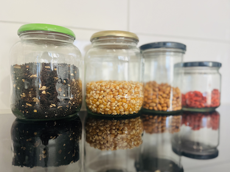
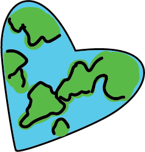
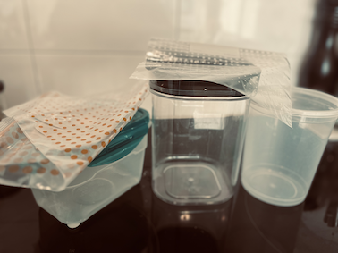
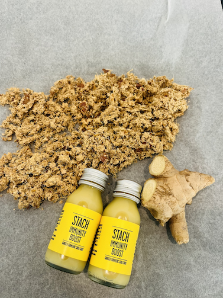

Tips voor het verminderen van jouw co2-voetafdruk!
Veranderen is niet gemakkelijk en gaat zeker niet in een keer, lees daarom onze weekelijks geplubiceerde tips over handige keuken- en booschappentrucjes die je zullen helpen onderweg.
Goede kwaliteit verpakkingsmateriaal kan heel duur zijn als je die nieuw opkoopt. Daarom hebben we in dit artikel opgesomd hoe je aan duurzaam verpakkingsmateriaal kan komen zonder je spaarrekening leeg te halen.
Lees meer..De juiste verpakkingsmateriaal voor jouw voedingsmiddelen
 Niet alle boodschappen blijven even lang goed. Om te voorkomen dat jouw voedingsproducten snel komen te vergaan is het belangrijk dat je de juiste bewaarsystemen hanteert. Het gaat hier om de juiste opslagmateriaal, de juiste temperatuur, de juiste zuurstofgehalte, de juiste schoonmaakmiddelen voor de verschillende materialen, etc.
Lees meer..Krijg de waarde voor je geld met de voedingsproducten die je aanschaft
Leer alle voedingsrestjes recyclen! Er zijn heel veel mogelijkheden om het maximale te halen uit je voeding en je geld. Zo kan je bijvoorbeeld lekkere chippies maken van je zoete patat schillen. Of croutons van het brood dat net niet lekker genoeg meer is om een boterham van te maken. Het is daarom goed om kennis op te doen over de verschillende recycle mogelijkheden van de voedingsrestjes die je thuis maakt.
Lees meer..